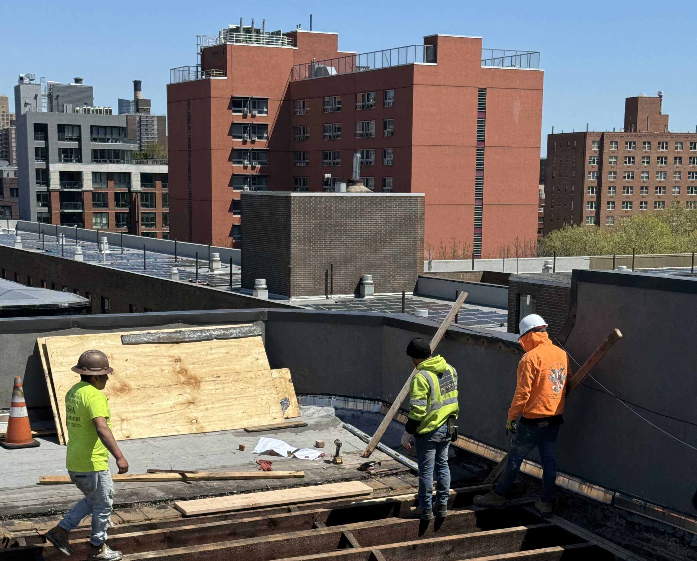
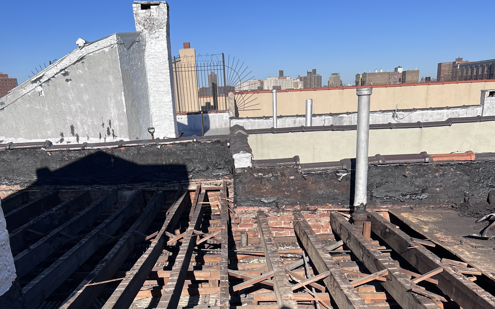

At Sirgee Construction Company, we understand that a strong roof and a stable structure are the backbone of any safe property. Our Roofing and Shoring services are designed to protect your home or building from the elements while ensuring its structural integrity during repairs, renovations, or emergencies. Whether you need a new roof, temporary support for a structure, or both — we’ve got the experience, equipment, and team to do it right.
🏠 Roofing Services
 Your roof is your first line of defense against rain, snow, wind, and sun. We provide complete roofing services using durable materials and expert installation to ensure long-lasting protection.
Our roofing work includes full roof replacements, shingle or flat roof installations, leak repairs, flashing replacement, and roof decking repairs. We also fix storm damage, sagging areas, and ventilation issues — extending the life of your roof and improving your home’s energy efficiency.
We work with a range of roofing materials, including:
- Asphalt shingles
- Torch-down and roll roofing
- Modified bitumen
- Flat and low-slope systems
Every job starts with a thorough inspection and ends with a clean, watertight finish you can count on.
🏗️ Shoring Services
 When your structure needs temporary support — whether due to renovations, repairs, or safety concerns — our shoring services provide reliable, engineered solutions to hold everything in place.
We install vertical and horizontal shoring systems to support walls, floors, or roofs during construction or structural remediation. Our team uses strong steel or timber components, adjusted to the load and layout of your building, always following safety codes and industry best practices.
Shoring is ideal for:
- Structural wall removal
- Foundation work
- Building modifications
- Emergency stabilization
- Underpinning and excavation support
With safety as our top priority, we make sure every job site stays secure for workers, residents, and property owners alike.
Why Choose Sirgee for Roofing and Shoring?
- ✔️ Certified, Experienced Crews: Trained in roofing and structural safety
- ✔️ High-Quality Materials: Weatherproof, durable, and built to last
- ✔️ Quick Response: Ideal for storm damage or emergency structural support
- ✔️ Clear Communication : We explain your options and keep you in the loop
- ✔️ One-Stop Solution: Roofing and shoring handled by one trusted team
Whether you're repairing storm damage, upgrading an aging roof, or tackling a major renovation — Sirgee Construction Company is your go-to contractor for reliable, professional roofing and shoring services.
📞 Call us today to schedule an inspection or request a free estimate.